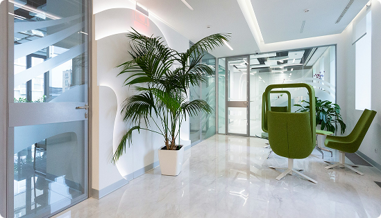

Sobre Nós
Somos uma clínica médica dedicada a oferecer atendimento de qualidade, pautado pela
ética, pelo respeito e pelo cuidado humanizado. Nosso trabalho é centrado no paciente, valorizando a
escuta, a atenção individual e a clareza nas orientações, para que cada pessoa se sinta segura e
acolhida durante todo o atendimento. Atuamos com responsabilidade e compromisso com a saúde,
buscando sempre proporcionar uma experiência confiável e profissional.

Estrutura Física
Nossa clínica conta com uma estrutura planejada para oferecer conforto, segurança e
acessibilidade aos pacientes. Os ambientes foram pensados para proporcionar bem-estar e
tranquilidade, seguindo padrões adequados de higiene e organização. Buscamos criar um espaço
acolhedor, que contribua para uma experiência positiva desde a recepção até o atendimento médico.

Nossa História
A PD Clínica surgiu com o propósito de oferecer um atendimento médico mais próximo,
humano e responsável. Desde sua criação, a clínica vem construindo sua trajetória com base na
confiança dos pacientes e no compromisso com a saúde e o bem-estar. Ao longo do tempo, buscamos
evoluir constantemente, aprimorando nossos serviços e fortalecendo nossos valores para atender cada
vez melhor.